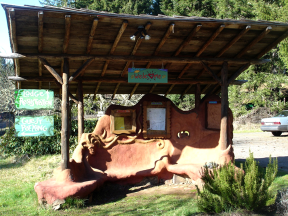
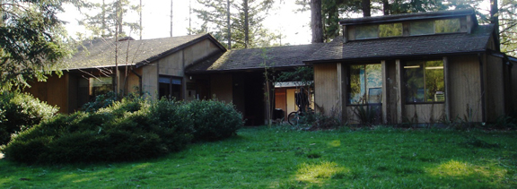
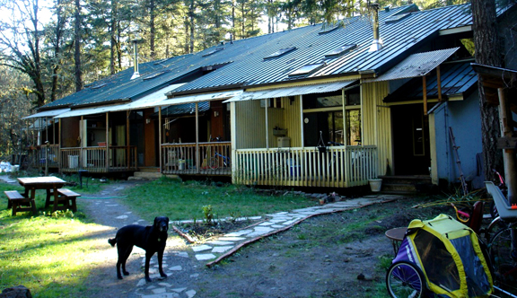
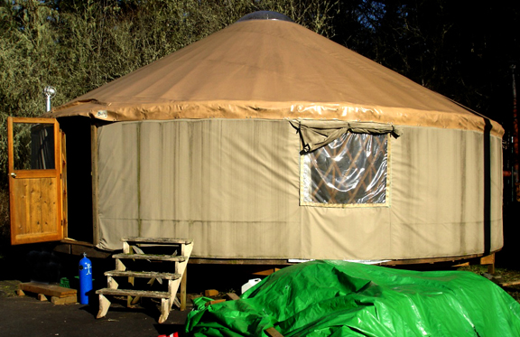
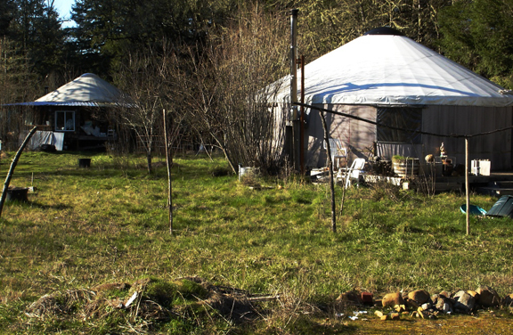
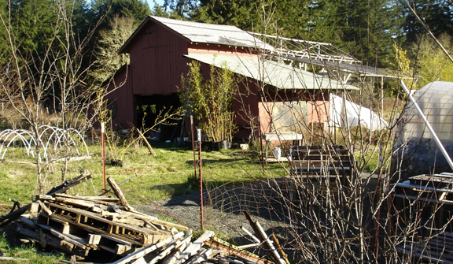
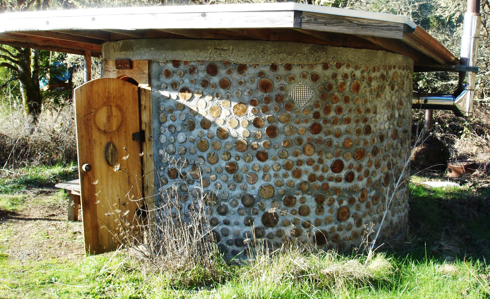
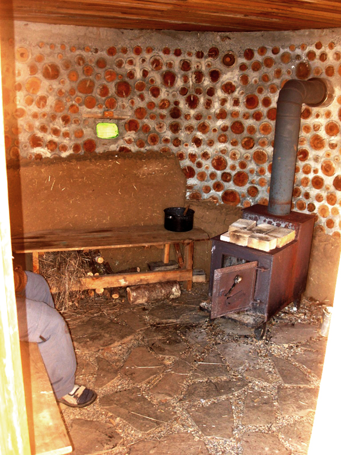
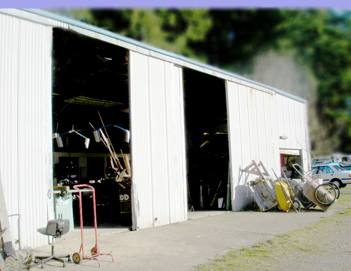

Lost Valley Pictures - Buildings
Entering Lost Valley

Coming up the driveway at Lost Valley. Parking lot is on the left, offices are beyond the parking lot. The front cob bench is straight ahead.

The front cob bench where we met for the tour. The main lodge is behind and to the right.
Buildings Around Lost Valley
The main lodge. Along the back of the picture (not connected to the lodge) is a small building containing mens and womens bathrooms, laundry room, storage room for bulk food, etc. 

Lost Valleys business center. There are several offices with 3-4 workstations in each. This is where the planning happens for the conferences and workshops that Lost Valley hosts. This building also contains the classroom for childrens activities and one of the general-purpose meeting rooms.

This is the “Solplex.” There are four “apartments” named A,B,C,D from left to right. We stayed in a bedroom in B during our visit. When we go back for work-trade, we will stay in an extra bedroom in the C apartment.

A 30-foot yurt (diameter) set up on an old basketball court.

More yurts.

The barn houses a potting room and a staging area for other agricultural projects.

Outside of the sauna.

Inside of the sauna. A wood-burning stove is used to provide heat for the stones.

The “shop” is used for carpentry projects, and tool & machine repair.